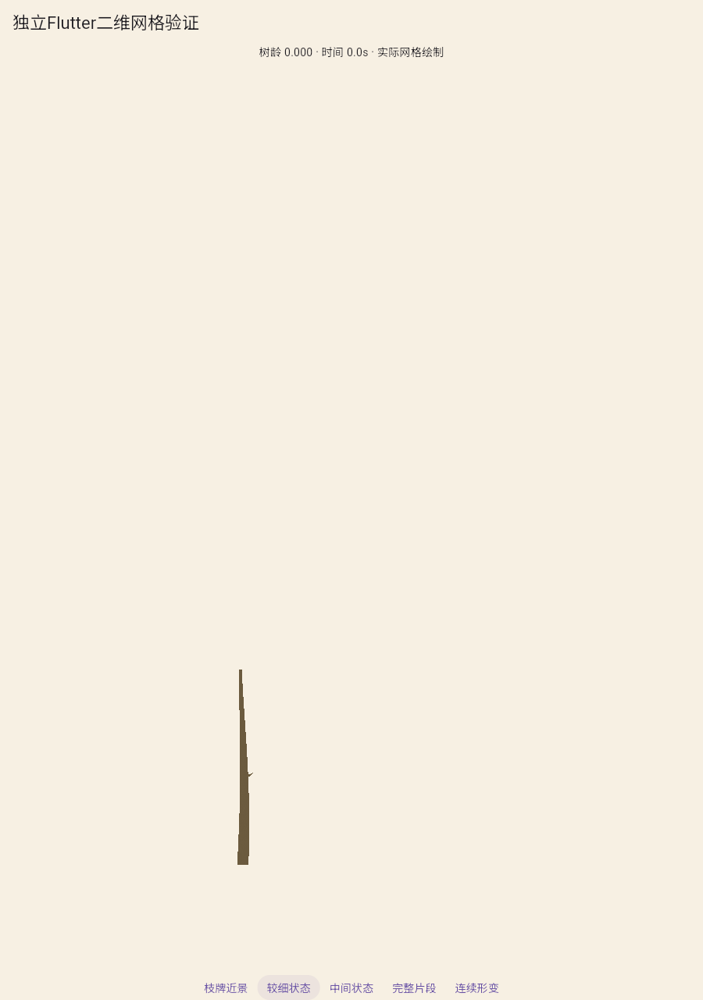
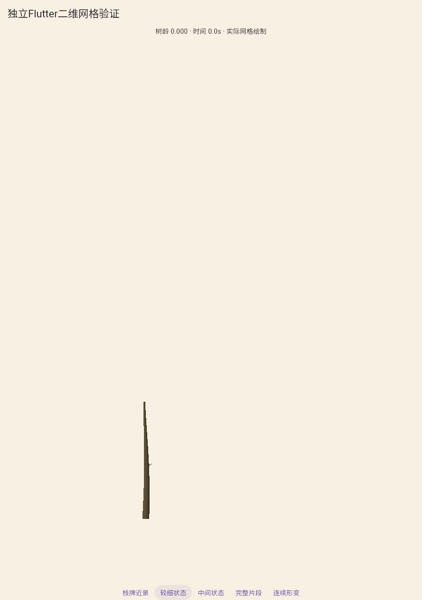
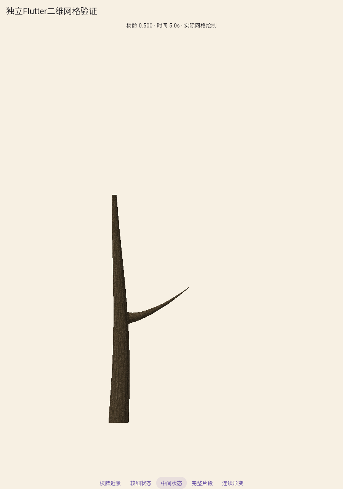
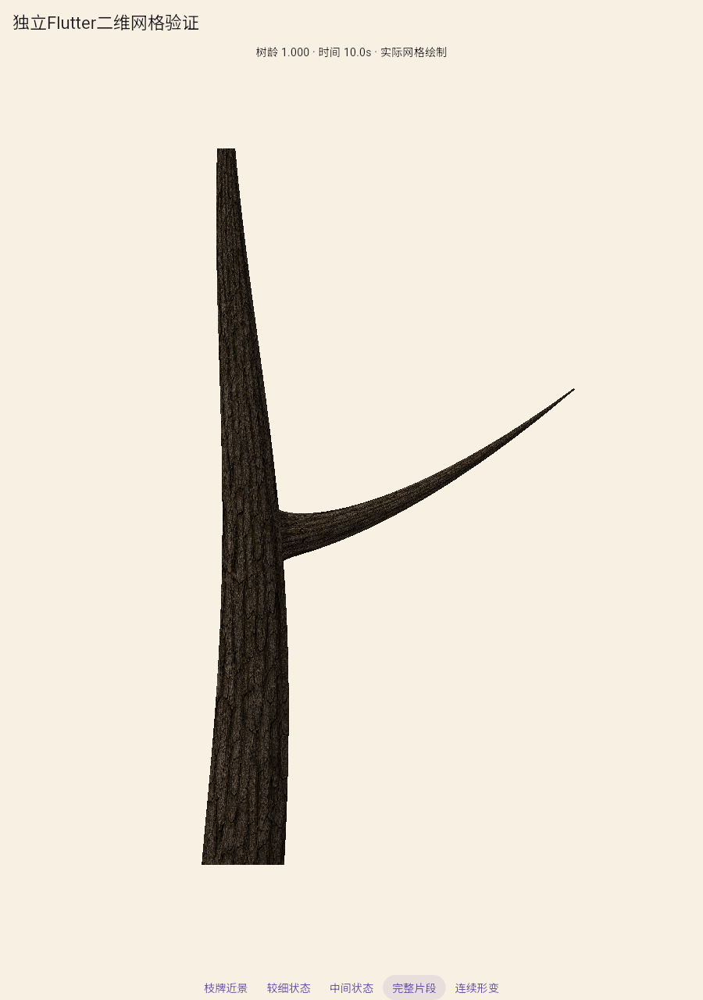
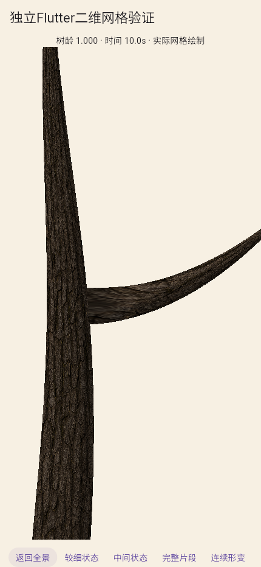
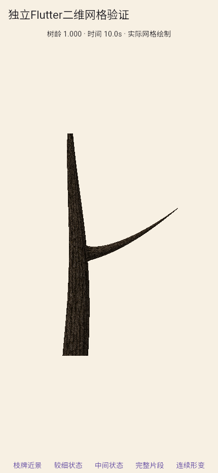

仅光滑幼干、短芽与首个子枝；没有根冠和枝牌，不是完整树苗，A2未通过。七套完整方案两轮淘汰不变。当前仍有材质接缝与参考风格差距。
完整记录 · 实际运行与源哈希 · 全区间审计 · 实际共享边/UV审计 · 破坏接头反例 · 幼干扫描线对照 · 首稿翻面拒绝记录






900×1280固定相机，101个实际Flutter状态，显示年龄与时间。10fps为编码帧率。对照中的局部放大只改变审查页显示窗口，不改源PNG。